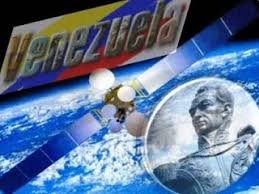
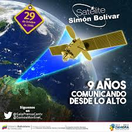

PROGRAMACION DE LAPSO 2021---2022
BREVE HISTORIA DEL SATELITE SIMON BOLIVAR
PROGRAMACION DE LAPSO 2021---2022
BREVE HISTORIA DEL SATELITE SIMON BOLIVAR
El satélite VENESAT-1 (Simón Bolívar) es el primer satélite artificial propiedad del Estado venezolano lanzado desde China el 29 de octubre de 2008. Es administrado por el Ministerio del Poder Popular para la Educación Universitaria, Ciencia y Tecnología a través de la Agencia Bolivariana para Actividades Espaciales (ABAE) de Venezuela para el uso por el Ministerio de Ciencia y Tecnología a mediados de 2004. photo credit Nasa / Goddard Space Flight Center / Reto Stöckli SATELITES SIMON BOLIVAR Y FRANCISCO DE MIRANDA Son los primeros satélites artificiales propiedad del Estado venezolano lanzado desde China el día 29 de octubre de 2008. Administrado por el Ministerio del Poder Popular para la Ciencia y Tecnología a través de la Agencia Bolivariana para Actividades Espaciales (ABAE) de Venezuela para el uso pacífico del espacio exterior. Se encuentra ubicado a una altura de 35.784,04 km de la superficie de la Tierra en la órbita geoestacionaria de Clarke. Es un Satélite de Observación Remota, destinado a tomar fotografías digitales en alta resolución del territorio de la República Bolivariana de Venezuela. No tiene utilidad en las telecomunicaciones, las cuales se aprovechan en el primer satélite venezolano, el Satélite Simón Bolívar. La carga útil de este proyecto está compuesta por cámaras de alta resolución (PMC), así como por cámaras de barrido ancho (WMC). facilitar el acceso y transmisión de servicios de datos por Internet, telefonía, televisión, telemedicina y teleeducación. Contempla cubrir todas aquellas necesidades nacionales que tienen que ver con las telecomunicaciones, sobre todo en aquellos lugares con poca densidad poblacional. pretende consolidar los programas y proyectos ejecutados por el Estado, garantizando llegar a los lugares más remotos, colocando en esos lugares puntos de conexión con el satélite, de tal manera que se garantice en tiempo real educación, diagnóstico e información a esa población que quizás no tenga acceso a ningún medio de comunicación y formación. La propuesta satelital está basada en tecnologías maduras ya desarrolladas por la industria espacial China.
El satélite posee un peso de 5,1 toneladas, tiene 3,6 metros de alto y tiene una vida útil de 15 años. El programa satelital tuvo una inversión de 406 millones de dólares entre el lanzamiento y la construcción de dos Estaciones Terrenas de Control Satelital operadas por la Agencia Bolivariana para Actividades Espaciales (Abae), las cuales están ubicadas en los estados Guárico y Bolívar.
1.Destacan la conectividad para las zonas remotas del país, y la comunicación entre la mayoría de los países de América Latina y el Caribe.
2.Facilitar el acceso y transmisión de servicios de datos por Internet, telefonía, televisión, telemedicina y teleeducación.
3.Contempla cubrir todas aquellas necesidades nacionales que tienen que ver con las telecomunicaciones sobre todo en aquellos lugares con poca densidad poblacional.
4.El seguimiento de la información a tiempo real es posible a través del Internet.
5.Realización de Programas Educativos para capacitar a distancia al personal en pasantía, médicos, odontólogos, enfermeros, entre otros y facilitar el acceso universal a la información en el sector salud.
6.SEGURIDAD Y DEFENSA 7.AGRICULTURA 
1.La órbita en la que se ubica el satélite corresponde a la de Uruguay, por lo que se llegó al acuerdo de cederle el 10 % de la capacidad del satélite a esta nación..
2.Requieren a bordo dispositivos complicados y pesado de propulsión, para mantenerlos en órbita fija. .
3.Elevado costo inicial que ascendió a 406 millones de dolares, que debido a los beneficios que genera este satélite se puede considerar como un costo de oportunidad. El costo incluye la construcción de las estaciones terrenas y el adiestramiento del personal
 4.Como todo satélite presenta interferencia de radio y microondas y debilitamiento de las señales debido a fenómenos metereológicos como lluvias intensas, nieve, y manchas solare
_.
5.Requieren a bordo dispositivos complicados y pesado de propulsión, para mantenerlos en órbita fija.
6.Requieren de mayores potencias de transmisión y receptores más sensibles, por las mayores distancias y mayores perdidas en la trayectoria
1. PANELES SOLARES: Consiste de dos secciones idénticas extendidas simétricamente en las direcciones norte y sur del satélite. Cada sección está compuesta por tres grupos de celdas solares, las cuales por el proceso fotovoltaico convierten la energía solar en energía eléctrica. La energía eléctrica producida por los paneles solares, se almacena en un conjunto de baterías ubicadas en la plataforma del satélite.
2. PLATAFORMA Y CARGA ÚTIL: La plataforma provee todas las funciones necesarias para realizar la misión espacial, Está dividida en el módulo de propulsión y el módulo de servicio.
3. ANTENA EN LA BANDA DE RADIOFRECUENCIA KU ORIENTADA HACIA EL CARIBE: Es una antena de forma elipsoidal de 3 x 2,2 m con un mecanismo de despliegue, la cual está montada en el lado este del satélite. Esta antena emite un haz que cubre en dirección norte los siguientes países: Venezuela, Haití, Cuba, República Dominicana y países del Caribe Oriental.
4. ANTENA EN LA BANDA DE RADIOFRECUENCIA KU ORIENTADA HACIA PARTE DEL CONO SUR: Es una antena de forma elipsoidal de 2,8 x 2 m con un mecanismo de despliegue, la cual está montada en el lado oeste del satélite. Esta antena emite un haz que cubre en dirección sur los siguientes países: Bolivia, Paraguay y Uruguay.
5. ANTENA EN LA BANDA DE RADIOFRECUENCIA C: Es una antena de rejilla doble excéntrica de 1,6 m de diámetro, la cual está montada en la cubierta del satélite que está orientada hacia la Tierra. La forma del reflector es parabólica, el cual emite un haz que cubre Venezuela, Cuba, República Dominicana, Haití, Jamaica, Centroamérica, toda Sudamérica sin los extremos más al sur de Chile y Argentina.
6. PEDESTAL PARA LAS ANTENAS DE TELEMETRÍA, TRACKING Y CONTROL: Es la estructura de apoyo de la antena C, sobre la cual están ensambladas los alimentadores de señales radioeléctricas de la antena en banda C y las antenas de TT&C.
7. ANTENA EN LA BANDA DE RADIOFRECUENCIA KA: Es una antena de forma elipsoidal de 1 m de diámetro, la cual está montada en la cubierta del satélite que está orientada hacia la Tierra. La forma del reflector principal es parabólica. Su cobertura es exclusivamente para Venezuela.
Tiene una vital importancia para nuestro país ya que posibilita a Venezuela independencia comunicacional, en el sentido de que se disminuirán los costos que paga actualmente el Estado por concepto de redes de telecomunicación. Con la creación de este satélite se busca satisfacer las necesidades que tiene los venezolanos en las áreas de telefonía, transmisión de información, acceso y transmisión de mensajes por Internet, especialmente en locaciones con poca densidad poblacional adonde no ha llegado la infraestructura de telecomunicaciones comerciales. Asimismo permitirá el acceso a servicios de comunicación entre los venezolanos, bien sea vía teléfonos fijos o móviles, Internet cableada o inalámbrica, claro está, en banda ancha, y por excelencia, el acceso a internet de calidad. El satélite tiene la ventaja de permitir la cobertura y llevar los servicios de telecomunicaciones en general. También con la creación de esta plataforma tecnológica se contribuye a salvar vidas, proveer de salud a la mayoría de nuestros ciudadanos. En las localidades remotas, bien sean rurales o indígenas, debemos contar con un equipamiento para permitir la interconexión al satélite, que será el medio de transporte de esas señales que puedan provenir de equipos electromédicos como una unidad de química sanguínea. Desde esos centros remotos puede establecerse comunicación con hospitales especializados o centros de diagnóstico que se encuentren especialmente en las ciudades donde contamos con mayor capacidad para asistir a los médicos generales que normalmente están atendiendo a las personas que habitan en esas zonas remotas. Con la puesta en órbita del satélite Simón Bolívar, hemos promovido nuestras redes telemáticas, de WAN a WAN satelital y World Wide Satelital, propio, lo que le da a Venezuela, aparte de ventajas estratégicas, la ventaja también a CANTV de ahorrarse el pago de proveedores, satelitales, y el de poder establecer entonces una tarifa social, en los costos de transmisión, por estas bandas.
VENTAJAS DEL SATELITE SIMON BOLIVAR
a_ Producir y distribuir eficazmente la información geográfica (mapas, bases de datos, etc.) de zonas de interés nacional o internacional.
b_ Simular y evaluar misiones en condiciones con escenarios tridimensionales
c_ Organizar operaciones humanitarias y de protección civil.
d_ Seguimiento y control de cultivos ilícitos
e_ Control de migraciones.
a_ PMonitoreo de cultivos
b_ Generación de mapas e inventarios de superficies para actividades agrícolas
c_ Estimación del volumen de las cosechas y apoyo a optimización de la producción.
DESVENTAJAS DEL SATELITE SIMON BOLIVAR

CARACTERISTICAS DEL SATELITE SIMON BOLIVAR
IMPORTANCIA DEL SATELITE SIMON BOLIVAR